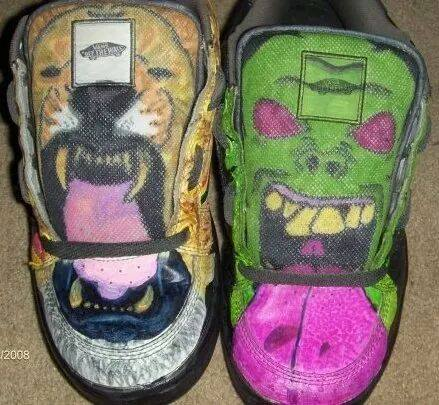
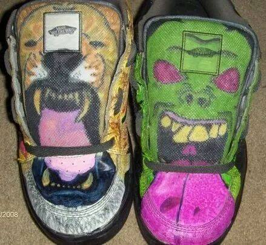

Handcrafted Shoes

Made: April 2nd for my friend Alexis RN pinning Ceramony. These shoes were crafted using marker and pen. The inspiration came from her love of flowers and birds. It took less than 6 hours to make.
Pen Drawings

Columbus from COSI
Marker Drawings

Rick Sanchez from Rick and Morty